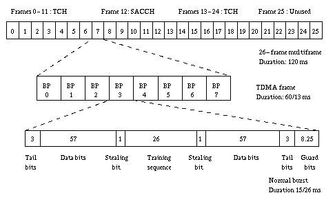

From a customer perpective, there are really only 2 parts to the GSM network, a cell phone and the "other end". The GSM standard defines much more than that. The high level description of the network is as follows, starting from your end.
- Mobile Station - Your phone. It's a wireless telephone and a data terminal which can send and recieve messages from the network.
- Base Transceiver Station (BTS) - the stuff that interfaces directly with your phone. This consists of fixed location transmitters and recievers for the cell which it is in charge of. Different radio types are used for different things, such as subscriber-to-network and network-to-subscriber, different data types, and signaling. This is "the tower" in your backyard.
- Base Station Controller (BSC) - handles 1 or more BTS. Gateways to the network.
- Mobile Switching Centers (MSC) connect the GSM network to the public switched telephone networks. Also provide a way to access the databases for who's where and who can do what.
- Home Locator Register (HLR) and Authentication Center (AUC) - the databases. These things have stuff for users on the network, guests/visitors on the network, subscriber information - particularly profile. Permananent user info is in the KLR, and the VLR stores temporary info about a mobile phone.
- PSTN/ISDN - The switched network backbones.
GSM uses Frequency Division Multiplexing AND Time Division Multiplexing. FDMA divides the frequency ranges for GSM, which are 890-915, 935-960 and some others that the book didn't have. Each is divided into 200kHz wide channels. As far as TDMA goes, each time slot is 577 micro seconds long, 8 time slices is a frame, lasting for a grand total of 4.615ms. A multiframe consists of 51 frames, 51 multiframes make up a Superframe, and 2048 Superframes make a Hyperframe which is 2715648 frames. Wow.
Parameter Value Downstream Frequencies 935-960MHz, 1805-1880MHz Upstream Frequency 890-915MHz, 1710-1785MHz Channel Spacing 200kHz Duplex Spacing 45MHz Radio Power 13-39dBm, 2dB steps Data Rise/Fall Time 28 microseconds Emissions < -36dBm Phase Error 5 deg RMS Freq Error 95Hz Recv Sensitivity 104dBm Co-channel Rejection 96dBm below signal Intermodulation Rejection 100dBm below signal Signal Blocking Level 100dBm
During a single time slot is your phone transmitting, and the contents of the time slot is called a packet. Packets are made of bits, and bits are made of magic.
A packet can be 4 different things:Each type has a different packet structure, and is visible here:
- random access burst - shorter than the normal burst.
- synchronization burst - same length as the normal burst but a different structure
- normal burst - carries speech or data information. lasts approximately 0.577 ms and has a length of 156.25 bits
- frequency correction burst - same length as the normal burst but a different structure

If you're interested in channel specifics, look at http://www.comms.eee.strath.ac.uk/~gozalvez/gsm/gsm.html#5.2
The main component here is the MSC. The MSC contains the Home Locator Register (HLR), Visitor Locator Register (VLR), and Authentication Center (AUC). These are the most interesting non-RF related parts of the system back end.
The HLR contains a lot of interesting information. The HLR is responsible for subscription details, and supplementary services. It also maintains information on the last know location and status of a particular phone.
Since a user can use any phone with his or her SIM card, there's a protocol necessary to manage accessing the network. Information contained on the SIM card is transmitted to the HLR to verify the identity of the subscriber. Location and status are continually updated in the HLR based on the base station reports and cell phone status. Any messages to be sent to the subscriber are queued in the HLR. All call setup queries ask the HLR for information before doing anything else.
Like the HLR, the VLR keeps track of users but only within the area thet the VLR is assigned. The VLR communicates with the HLR to figure out where to route calls, and to keep track of peple as they move around.
The AUC is basically just a database full onf confidential subscriber information attached to the back of the HLR. Its located in a "secure place" and the data is stored in "coded" form (sounds like encryption to me). The AUC is responsible for controlling the rights of usage of the network services, i.e. phone calls, data, internet, etc... The AUC allows the Network Operator (Cingular, AT&T) to know "unambiguiusly" who is on the network for billing purposes. The AUC also protects the user from fraud (somehow ...) and contains the secret information necessary to handle authentication and encryption.
Authentication on the network works as follows. First the mobile terminal is asked to perform a computation on a random number supplied by the system using a secret key stored on the SIM card. The system does this calculation internally, and compares the outputs. Both the algorithm and key are stored in secure formats.
More detailed authentication ... When a terminal connects to the network, a RNG gives it a number N which is encrypted with a secret personal key Kp. The resulting number is encrypted with an algorithm called A3 and transmitted back to the network and compared. The subscriber then generates a session key for encrpytion using the algorithm A8. The encryption algorithm A5 is used to encrypt each packet.
After the subscriber is verified, the encryption of radio packets is handled by a different algorithm, called A5 (A3 is used during subscriber verification). The encryption key is supplied during authentication, using some key agreement scheme and each packet is also encrypted using a changing IV of some variety, which appears to be a packet number. I do not think either of these algorithms are officially public (LINKS?).
There are 3 main algorithms used in GSM. Each of these algorithms is a trade secret and only released to people who the GSM committee determines has a need-to-know.
Name Use Basics A3 Authentication None A5 Encryption/Decryption Algorithm for packet encryption 3 Sparsely loopedback LFSRs in the original version, lots of variants A8 Cipher Key Generator Basically a one way function
A5 is a stream algorithm and is reset for each packet with the orignal
key plus some key frame number. Ross Anderson in [1] suggests that A5/1 has
about an equivalent key strength of about 40 bits. Code? No?
typedef struct {
unsigned long rl,r2,r3;
} a5 ctx;
static int threshold(rl, r2, r3)
unsigned int rl;
unsigned int r2.
unsigned int r
{
int total;
total = (((r1 >> 9) & 0x1) == 1) +
(((r2 >> 11) & 0x1) == 1) +
(((r3 >> 11) & 0x1) == 1);
if (total > 1)
return (0);
else
return (1):
}
unsigned long clock_r1(ctl, r1)
int ctl
unsigned lonq r1:
{
unsigned long feedback;
ctl ^= ((rl >> 9) & Oxl);
if (ctl)
{
feedback = (r1 >> 18) ^ (r1 >> 17) ^ (r1 >> 16) ^ (r1 >> 13);
r1 = (r1 << 1) & Ox7ffff;
if (feedback & 0x01)
r1 ^= 0x01:
}
return (r1);
}
unsigned long clock_r2(ctl, r2)
int ctl;
unsigned long r2;
{
unsigned long feedback;
ctl ^= ((r2 >> 11) & 0x1);
if (ctl)
{
feedback = (r2 >> 21) ^ (r2 >> 20) ^ (r2 >> 16) ^ (r2 >> 12);
r2 = (r2 << 1) & 0x3fffff;
if (feedback & 0x01)
r2 ^= 0x01;
}
return (r2):
}
unsigned long clock_r3(ctl, r3)
int ctl
unsigned long r3;
{
unsigned long feedback;
ctl ^= ((r3 >> 11) & 0x1,
if (ctl)
{
feedback = (r3 >> 22) ^ (r3 >> 21) ^ (r3 >> 18) ^ (r3 >> 17);
r3 = (r3 << 1) & 0x7fffff;
if (feedback & 0x01)
r3 ^= 0x01:
}
return (r3);
}
int keystream(key, frame, alice, bob)
unsigned char *key; /* 64 bit session key */
unsigned long frame; /* 22 bit frame sequence number */
unsigned char *alice; /* 114 bit Alice to Bob key stream */
unsigned char *bob; /* 114 bit Bob to Alice key stream */
{
unsigned long rl; /* 19 bit shift register */
unsigned long r2; /* 22 bit shift register */
unsigned long r3; /* 23 bit shift register */
int i; /* counter for loops */
int clock_ctl; /* xored with clock enable on each shift register
unsigned char *ptr; /* current position in keystream */
unsigned char byte; /* byte of keystream being assembled */
unsigned int bits; /* number of bits of keystream in byte */
unsigned int bit; /* bit output from keystream generator */
/* Initialise shift registers from session key */
r1 = (key[0] I (key[1] << 8) 1 (key[2] << 16) ) & 0x7ffff;
r2 = ((key[2] >> 3) 1 (key[3] << 5) 1 (key[4] << 13) 1 (key[5] << 21)) &
0x3fffff;
r3 = ((key[5] >> 1) 1 (key[6] << 7) 1 (key[7] << 15) ) & 0x7fffff;
/* Merge frame sequence number into shift register state, by xor'ing it
* into the feedback path
*/
for (i=0;i<22;i++)
{
clock_ctl = threshold(r1, r2, r2);
r1 = clock r1(clock_ctl, r1);
r2 = clock_r2(clock_ctl, r2);
r3 = clock_r3(clock_ctl, r3);
if (frame & 1)
{
r1 ^= 1;
r2 ^= 1;
r3 ^= 1;
frame = frame >> 1;
}
/* Run shift registers for 100 clock ticks to allow frame number to
* be diffused into all the bits of the shift registers
*/
for (i=0;i<100;i++)
{
clock_ctl = threshold(r1, r2, r2);
r1 = clock r1(clock_ctl, r1);
r2 = clock_r2(clock ctl, r2);
r3 = clock r3(clock_ctl, r3);
}
/* Produce 114 bits of Alice->Bob key stream */
ptr = alice;
bits = 0;
byte = 0;
for (i=0;i<114;i++)
{
clock_ctl = threshold(r1, r2, r2);
r1 = clock rl(clock_ctl, r1);
r2 = clock_r2(clock ctl, r2);
r3 = clock_r3(clock_ctl, r3);
bit = ((rl >> 18) ^ (r2 >> 21) ^ (r3 >> 22)) & 0x01;
byte = (byte << 1) | bit;
bits++;
if (bits == 8)
{
*ptr = byte;
ptr++;
bits = 0;
byte = 0;
}
}
if (bits)
*ptr = byte;
/* Run shift registers for another 100 bits to hide relationship between
* Alice->Bob key stream and Bob->Alice key stream.
for (i=0;i<100;i++)
{
clock_ctl = threshold(r1, r2, r2);
r1 = clock_r1(clock_ctl, r1);
r2 = clock r2(clock_ctl, r2);
r3 = clock r3(clock ctl, r3);
}
/* Produce 114 bits of Bob->Alice key stream
ptr = bob;
bits = 0:
byte = 0;
for (i=U;i<114;i++)
{
clock_ctl = threshold(r1, r2, r2);
r1 = clock r1(clock_ctl, r1);
r2 = clock_r2(clock ctl, r2);
r3 = clock_r3(clock ctl, r3);
bit = ((r1 >> 18) ^ (r2 >> 21) ^ (r3 >> 22)) & 0x01;
byte = (byte << 1) | bit;
bits++;
if (bits == 8)
{
*ptr = byte;
ptr++
bits = 0;
byte = 0;
}
}
if (bits)
*ptr = byte;
return (0);
}
void a5_key(a5_ctx *c, char *k)(
c->rl = k[0]<<11|k[1]<<3 | k[2]>>5 ; /* 19 */
c->r2 = k[2]<<17|k[3]<<9 | k[4]<<1 I k[5]>>7; /* 22 */
c->r3 = k[5]<<15|k[6]<<8 | k[7] ; /* 23 */
}
/* Step one bit in A5, return 0 or 1 as output bit. */
int a5_step(a5 ctx *c){
int control;
control = threshold(c->r1,c->r2,c->r3);
c->r1 = clock_r1(control,c->r1);
c->r2 = clock_r2(control,c->r2);
c->r3 = clock_r3(control,c->r3);
return( (c->r1^c >r2^c->r3)&1);
}
/* Encrypts a buffer of len bytes. */
void a5_encrypt(a5_ctx *c, char *data, int len)l
int i,j;
char t;
for(i=0:i<len i++)
for(j=0;j<8;j++) t = t<<1 | a5_step(c)
data[i]^=t;
}
}
void a5_decrypt(a5_ctx *c, char *data, int len){
a5_encrypt(c,data,len);
}
void main(void){
a5_ctx c;
char data[100];
char key[] = {1,2,3,4,5,6,7,8};
int i,flag;
for(i=0;i<100;i++) data[i] = i;
a5_key(&c,key);
a5_encrypt(&c,data,100);
a5_key(&c,key);
a5_decrypt(&c,data,1);
a5_decrypt(&c,data+1,99);
flag = 0;
for(i=0;i<100;i++) if(data[i]!=i)flag = 1;
if(flag)printf("Decrypt failed\n"); else printf("Decrypt succeeded\n");
}
I haven't had time to look at this code yet, but it looks interesting ... maybe
its A5? Who knows. Keep going.
A3 is another algorithm which is "secret" algorithm called COMP128 for this and A8. COMP128 takes a key and a random number and produces the answer to verify the subscriber during authentication as well as the key to start encrypting the packets with. At the same time! What a deal! The signed response is 32 bits, and the encryption key is 54 (64 with the last 10 bits = 0).
Each mobile radio has a couple security features to keept it from being stolen. Each phone is built with a International Mobile Equipment Identity (IMEI), and this is done in the factory beofore the phone is even activated. Each time the mobile radio is used, the network checks the IMEI against some list of authorized and banned numbers to verify that the phone is allowed to be on the network.
1. The Internet
- http://www.dia.unisa.it/professori/ads/corso-security/www/CORSO-9900/a5/Netsec/netsec.html
- http://jya.com/crack-a5.htm
- http://www.comms.eee.strath.ac.uk/~gozalvez/gsm/gsm.html
2. Stuckmann P., The GSM Evolution: Mobile Packet Data Services, West Sussex: John Wiley & Sons, Ltd., 2003.
4. Steele, R., Lee, C., and Gould, P., GSM, cdmaOne and 3G Systems West Sussex: John Wiley & Sons, Ltd., 2001.
3. Tisal, J., The GSM Network GPRS Evolution: One Step Towards UMTS, West Sussex: John Wiley & Sons, Ltd., 2001.